To find the inverse function, switch the $x$ and $y$ values, and then solve for $y$ .
Calculate the formula of an function's inverse by switching
An inverse function, which is notated $f^{-1}(x) $ , is defined as the inverse function of $f(x)$ if it consistently reverses the $f(x)$ process. That is, if $f(x)$ turns $a$ into $b$ , then $f^{-1}(x)$ must turn $b$ into $a$ . More concisely and formally, $f^{-1}(x)$ is the inverse function of $f(x)$ if:
Below is a mapping of function $f(x)$ and its inverse function, $f^{-1}(x)$ . Notice that the ordered pairs are reversed from the original function to its inverse. Because $f(x)$ maps $a$ to $3$ , the inverse $f^{-1}(x)$ maps $3$ back to $a$ .
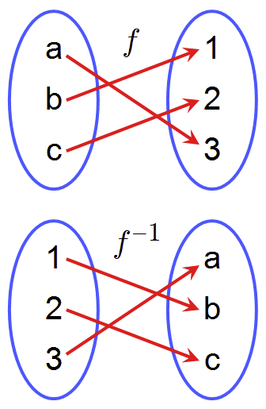An inverse function reverses the inputs and outputs. The mapping f has a, b, and c on the left and 1, 2, 3 on the right, with the mappings a to 3, b to 1, c to 2. The mapping f-inverse (f^-1) has 1, 2, and 3 on the left and a, b, and c on the right, with the mappings 1 to b, 2 to c, 3 to a.
Thus the graph of $f^{-1}(x)$ can be obtained from the graph of $f(x)$ by switching the positions of the $x$ and $y$ -axes. This is equivalent to reflecting the graph across the line $y=x$ , an increasing diagonal line through the origin.
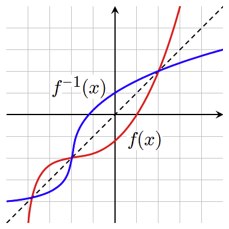The function graph (red) and its inverse function graph (blue) are reflections of each other about the line $y=x$ (dotted black line). Notice that any ordered pair on the red curve has its reversed ordered pair on the blue line. For example, $(0,1)$ on the red (function) curve is reflected over the line $y=x$ and becomes $(1,0)$ on the blue (inverse function) curve. Where one curve is on the line $y=x$ , the curves intersect, as a reflection over the line leaves the point unchanged.
In general, given a function, how do you find its inverse function? Remember that an inverse function reverses the inputs and outputs. So to find the inverse function, switch the $x$ and $y$ values of a given function, and then solve for $y$ .
Find the inverse of : $f(x)=x^2$
a. : Write the function as: $y=x^2$
b. : Switch the $x$ and $y$ variables: $x=y^2$
c. : Solve for $y$ :
$\begin {align} x&=y^2 \\ \pm\sqrt{x}&=y \end {align}$
Since the function $f(x)=x^2$ has multiple outputs, its inverse is not a function. Notice the graphs in the picture below. Even though the blue curve is a function (passes the vertical line test), its inverse would not be. The red curve for the function $f(x)=\sqrt{x}$ is not the full inverse of the function $f(x)=x^2$
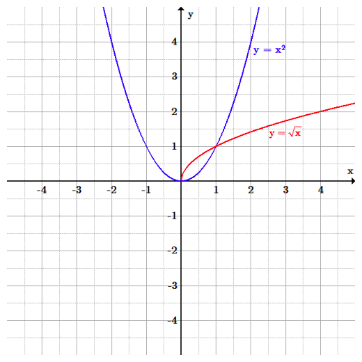A function's inverse may not always be a function. The function (blue) $f(x)=x^2$ , includes the points $(-1,1)$ and $(1,1)$ . Therefore, the inverse would include the points: $(1,-1)$ and $(1,1)$ which the input value repeats, and therefore is not a function. For $f(x)=\sqrt{x}$ to be a function, it must be defined as positive. The function f(x)=x^2 is a parabola (u-shaped curve) opening up with its vertex at the origin. The function f(x)=square root of x is half a parabola opening to the right, in the first quadrant only.
Find the inverse function of : $f(x)=2^x$
As soon as the problem includes an exponential function, we know that the logarithm reverses exponentiation. The complex logarithm is the inverse function of the exponential function applied to complex numbers. Let's see what happens when we switch the input and output values and solve for $y$ .
a. : Write the function as: $y = {2}^{x}$
b. : Switch the $x$ and $y$ variables: $x = {2}^{y}$
c. : Solve for $y$ :
$\begin {align} {log}_{2}x &= {log}_{2}{2}^{y} \\{log}_{2}x &= y{log}_{2}{2} \\{log}_{2}x &= y \\{f}^{1}(x) &= {log}_{2}(x) \end {align}$
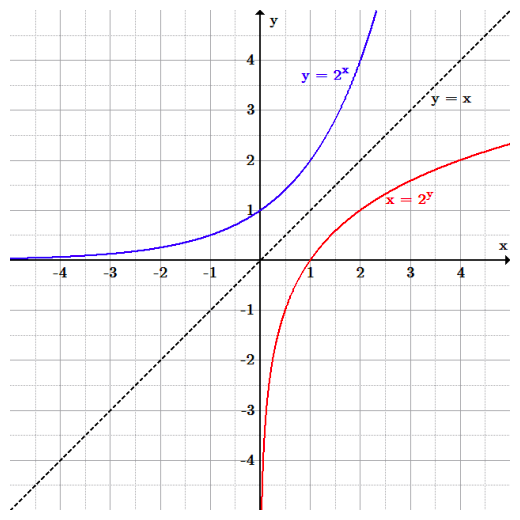The graphs of $y=2^x$ (blue) and $x=2^y$ (red) are inverses of one another. The black line represents the line of reflection, in which is $y=x$ . y=2^x is increasing from the x-axis in quadrants 2 and 1. x=2^y is increasing from the y-axis from quadrant 3 to 1. They are reflections of each other over the line y=x.
Test to make sure this solution fills the definition of an inverse function.
Functional composition allows for the application of one function to another; this step can be undone by using functional decomposition.
Practice functional composition by applying the rules of one function to the results of another function
The process of combining functions so that the output of one function becomes the input of another is known as a composition of functions. The resulting function is known as a composite function. We represent this combination by the following notation:
We read the left-hand side as "$f$ " composed with $g$ at $x$ , and the right-hand side as "$f$ of $g$ of $x$ ." The two sides of the equation have the same mathematical meaning and are equal. The open circle symbol, $$ , is called the composition operator. Composition is a binary operation that takes two functions and forms a new function, much as addition or multiplication takes two numbers and gives a new number.
It is important to understand the order of operations in evaluating a composite function. We follow the usual convention with parentheses by starting with the innermost parentheses first, and then working to the outside.
In general, $(fg)$ and $(gf)$ are different functions. In other words, in many cases $f(g(x))g(f(x))$ for all $x$ .
Note that the range of the inside function (the first function to be evaluated) needs to be within the domain of the outside function. Less formally, the composition has to make sense in terms of inputs and outputs.
When evaluating a composite function where we have either created or been given formulas, the rule of working from the inside out remains the same. The input value to the outer function will be the output of the inner function, which may be a numerical value, a variable name, or a more complicated expression.
If $f(x)=-2x$ and $g(x)=x^2-1$ , evaluate $f(g(3))$ and $g(f(3))$ .
To evaluate $f(g(3))$ , first substitute, or input the value of $3$ into $g(x)$ and find the output. Then substitute that value into the $f(x)$ function, and simplify:
Therefore, $f(g(3))=-16$
To evaluate $g(f(3))$ , find $f(3)$ and then use that output value as the input value into the $g(x)$ function:
Therefore, $g(f(3))=35$
While we can compose the functions for each individual input value, it is sometimes helpful to find a single formula that will calculate the result of a composition $f(g(x))$ or $g(f(x))$ . To do this, we will extend our idea of function evaluation.
In the next example we are given a formula for two composite functions and asked to evaluate the function. Evaluate the inside function using the input value or variable provided. Use the resulting output as the input to the outside function.
If $f(x) =-2x$ and $g(x)=x^2-1$ , evaluate $f(g(x))$ and $g(f(x))$ .
First substitute, or input the function $g(x)$ , $x^2-1$ into the $f(x)$ function, and then simplify:
For $g(f(x))$ , input the $f(x)$ function, $-2x$ into the $g(x)$ function, and then simplify:
Functional decomposition broadly refers to the process of resolving a functional relationship into its constituent parts in such a way that the original function can be reconstructed (i.e., recomposed) from those parts by function composition. In general, this process of decomposition is undertaken either for the purpose of gaining insight into the identity of the constituent components (which may reflect individual physical processes of interest), or for the purpose of obtaining a compressed representation of the global function; a task which is feasible only when the constituent processes possess a certain level of modularity (i.e., independence or non-interaction).
In general, functional decompositions are worthwhile when there is a certain "sparseness" in the dependency structure; i.e. when constituent functions are found to depend on approximately disjointed sets of variables. Also, decomposition of a function into non-interacting components generally permits more economical representations of the function.
Domain restriction is important for inverse functions of exponents and logarithms because sometimes we need to find an unique inverse.
Determine inverses of functions by restricting their domains
$f^{-1}(x)$ is defined as the inverse function of $f(x)$ if it consistently reverses the $f(x)$ process. That is, if $f(x)$ turns $a$ into $b$ , then $f^{-1}x$ must turn $b$ into $a$ . More concisely and formally, $f^{-1}x$ is the inverse function of $f(x)$ if $f({f}^{-1}(x))=x$ .
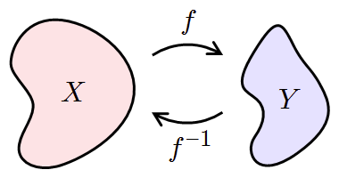If $f$ maps $X$ to $Y$ , then $f^{-1}$ maps $Y$ back to $X$ .
Informally, a restriction of a function is the result of trimming its domain. Remember that: If $f$ maps $X$ to $Y$ , then $f^{-1}$ maps $Y$ back to $X$ . This is not true of the function $f(x)=x^2$ .
Without any domain restriction, $f(x)=x^2$ does not have an inverse function as it fails the horizontal line test. But if we restrict the domain to be $x > 0$ then we find that it passes the horizontal line test and therefore has an inverse function. Below is the graph of the parabola and its "inverse." Notice that the parabola does not have a "true" inverse because the original function fails the horizontal line test and must have a restricted domain to have an inverse.
Graph of a parabola with the equation $y=x^2$ , the U-Shaped curve opening up. This function fails the horizontal line test, and therefore does not have an inverse. The inverse equation, $y=\sqrt{x}$ (other graph) only includes the positive input values of the parabola's domain. However, if we restrict the domain to be $x>0$ , then we find that it passes the horizontal line test and will match the inverse function.
Domain restriction is important for inverse functions of exponents and logarithms because sometimes we need to find an unique inverse. The inverse of an exponential function is a logarithmic function, and the inverse of a logarithmic function is an exponential function.
Is $x=0$ in the domain of the function $f(x)=log(x)$ ? If so, what is the value of the function when $x=0$ ? Verify the result.
No, the function has no defined value for $x=0$ . To verify, suppose $x=0$ is in the domain of the function $f(x)=log(x)$ . Then there is some number $n$ such that $n=log(0)$ . Rewriting as an exponential equation gives: $10n=0$ , which is impossible since no such real number $n$ exists. Therefore, $x=0$ is not in the domain of the function $f(x)=log(x)$ .
A composite function represents, in one function, the results of an entire chain of dependent functions.
Solve for the inverse of a composite function
In mathematics, function composition is the application of one function to the results of another.
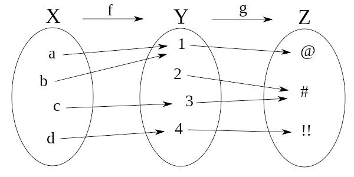$g \circ f$ , the composition of $f$ and $g$ . For example, $(g\circ f)(c) = \#$ . On the left, the domain X, with a, b, c, and d, undergoes function f, mapping them to another group of elements Y (in the middle), 1, 2, 3, and 4. a and b are mapped to 1, c is mapped to 3, and d is mapped to 4. The elements of Y are mapped by function g to a group of elements Z on the right. 1 is mapped to @, 2 and 3 are mapped to #, and 4 is mapped to !!
The functions $g$ and $f$ are said to commute with each other if $g f = f g$ . In general, the composition of functions will not be commutative.
A composite function represents in one function the results of an entire chain of dependent functions. For example, if a school becomes larger, the supply of food in the cafeteria must become larger. This would entail ordering more sandwiches, which means ordering more ingredients, drinks, plates, etc. The entire chain of dependent functions are the ingredients, drinks, plates, etc., and the one composite function would be putting the entire chain together in order to calculate a larger population at the school.
Let's go through the relationship between inverses and composition in this example. let's take two functions, compose and invert them.
Find: $(fg)'(x)(f\circ g)' (x)$
First, compose them by applying the function $f$ to the result of applying function $g$ :
$$ Then, invert it by switching the $x$ and $y$ variables:
Logarithmic functions and exponential functions are inverses of each other. That is, they undo each other.
Explain the relationship between logarithmic functions and exponential functions
The inverse of an exponential function is a logarithmic function and vice versa. That is, the two functions undo each other. Thus $log_{b}b^{x}=x $ and $b^{log_{b}x}=x $ . Composing the functions in either order leaves the initial input unchanged.
Another way of saying this is that if $f(x)=log_{b}x $ , then the inverse function is given by $f^{-1}(x)=b^{x} $ , and vice versa.
Lastly, as with all inverse functions, if we graph $f(x)=log_{b}x $ and $f^{-1}(x)=b^{x}$ on the same plane, the graphs will be symmetric across the line $y=x$ . That is, if we fold the plane over the line $y=x$ , the two curves will lie on each other. Another way of thinking about this is that if we generate points on the curve of $f(x)=log_{b}x$ we can find the points on the curve of $f^{-1}(x)=b^{x}$ by interchanging the $x$ and $y$ coordinates of the points.
In the following graph you can see an exponential function in red and its inverse, a logarithmic function, in blue. The graphs are symmetric over the line $y=x$ , which is pictured in black. Further, a point $(t,u=b^t)$ on the graph of $f(x)$ yields a point $(u,t=log{_b}u)$ on the graph of the logarithm and vice versa.
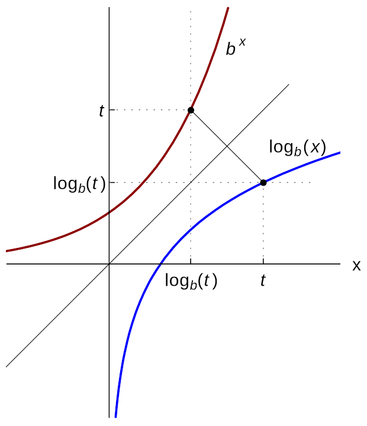The graph of the logarithm function $log_b(x)$ (blue) is obtained by reflecting the graph of the function $b(x)$ (red) at the diagonal line ($x=y$ ).
Thus far we have been looking at logs of the base $b$ . Let us consider instead the natural log (a logarithm of the base $e$ ). The natural logarithm is the inverse of the exponential function $f(x)=e^x$ . It is defined for $e>0$ , and satisfies $f^{-1}(x)=lnx $ .
As they are inverses composing these two functions in either order yields the original input. That is, $e^{lnx}=lne^x=x$ .
The logarithm of a number is the exponent by which another fixed value, the base, has to be raised to produce that number.
Practice working with logarithmic functions and identify their parts
In its simplest form, a logarithm is an exponent. Taking the logarithm of a number, one finds the exponent to which a certain value, known as a base, is raised to produce that number once more.
Logarithms have the following structure: $log{_b}(x)=c$ where $b$ is known as the base, $c$ is the exponent to which the base is raised to afford $x$ . The base $b>0$ .
Note that $log{_b}x=c$ is not defined for $c<0$ . This is because the base $b$ is positive and raising a positive number to any power will yield a non-negative number.
A logarithm with a base of $10$ is called a common logarithm and is denoted simply as $logx$ . The common log is used often in science and engineering.
A logarithm with a base of $e$ is called a natural logarithm and is denoted $lnx$ . The irrational number $e\approx 2.718 $ arises naturally in financial mathematics, in computations having to do with compound interest and annuities.
A logarithm with a base of $2$ is called a binary logarithm. While it has no special notation, it is often used in computer science.
Logarithmic equations can be written as exponential equations and vice versa. The logarithmic equation $log_b(x)=c$ corresponds to the exponential equation $b^{c}=x$ .
As an example, the logarithmic equation $log{_2}16=4$ corresponds to the exponential equation $2^4=16$ .
Example 1: Solve for $x$ in the equation $log{_3}(243)=x$ .
Here we are looking for the exponent to which $3$ is raised to yield $243$ .
It might be more familiar if we convert the equation to exponential form giving us:
$3^x=243 \\ 3^5 =243$
Thus, $log{_3}(243)=5$ .
The explanation of the previous example reveals the inverse of the logarithmic operation: exponentiation. Starting with $243$ , if we take its logarithm with base $3$ , then raise $3$ to the logarithm, we will once again arrive at $243$ .
$log_{b}1=0 $ as $b^0=1$ for $b\neq 0 $ . Note that $0^0\neq 1 $ . Rather, $0^0$ is called an indeterminate form.
$log{_b}b=1$ as $b^1=b$
$log{_b}0=undefined$ , as there is no number x such that $b^x=0$
The following two logarithmic identities can be verified by converting the logarithmic equation into an exponential equation as follows:
$b^{log_{b}(x)}=x $
Converting this to a logarithmic equation yields: $log_{b}(x)=log_{b}(x)$
Converting $log_{b}(b^x)=x$ to an exponential equation yields $b^x=b^x$
Historically, logarithms were invented by John Napier as a way of doing lengthy arithmetic calculations prior to the invention of the modern day calculator.
More recently, logarithms are most commonly used to simplify complex calculations that involve high-level exponents. In chemistry, for example, pH and pKa are used to simplify concentrations and dissociation constants, respectively, of high exponential value. The purpose is to bring wide-ranging values into a more manageable scope. A dissociation constant may be smaller than $10^{10}$ , or higher than $10^{-50}$ . Taking the logarithm of each brings the values into a more comprehensible scope ($10$ to $-50$ ) .
Any positive number can be used as the base of a logarithm but certain bases ($10$ , $e$ , and $2$ ) have more widespread applications than others.
Distinguish between the uses of different types of special logarithms
Logarithms were originally invented by John Napier (1515-1617) to aid in arithmetical computations at a time when modern day calculators were not in use. In the present day, logarithms have many uses in disciplines as different as economics, computer science, engineering and natural sciences. Logarithmic scales reduce wide-ranging quantities to tiny scopes. For example, the decibel is a unit quantifying signal power log-ratios and amplitude log-ratios (of which sound pressure is a common example). In chemistry, pH is a logarithmic measure for the acidity of an aqueous solution. Logarithms are commonplace in scientific formulae, and in measurements of the complexity of algorithms and of geometric objects called fractals. They describe musical intervals, appear in formulas counting prime numbers, inform some models in psychophysics, and can aid in forensic accounting.
While any positive number can be used as the base of a logarithm, not all logarithms are equally useful in practice. Some bases have more applications than others. Out of the infinite number of possible bases, three stand out as particularly useful. These are $10$ , $e$ and $2$ .
A logarithm with a base of $10$ is called a common logarithm and is denoted simply as $logx$ . Common logarithms are often used in physical and natural sciences and engineering.
A logarithm with a base of $e$ is called a natural logarithm and is denoted $lnx$ . The irrational number $e\approx 2.718 $ and arises naturally in financial mathematics in computations having to do with compound interest. Natural logarithms are also used in physical sciences and pure math.
A logarithm with a base of $2$ is called a binary logarithm and is denoted $ldn$ . Binary logarithms are useful in any application that involves the doubling of a quantity, and particularly in computer science with the use of integral parts.
The list below highlights only some of the many uses of logarithms in the present day.
1. The magnitude of an earthquake (M) can be determined based on the logarithm of an intensity measurement from a seismograph (I):
$M=log(\frac{I}{I_0})$ where I0 is a constant.
2. The common logarithm is used in calculating the safety index which helps determine how safe certain activities are by determining how likely people are to die from them. For example, $1$ in $2,000,000$ people is killed by lightning. It might be hard to get a real sense of how likely one is to die by getting hit by lightning because $2,000,000$ is such a large number and our minds cannot make sense of it easily. If one in $x$ people die as a result of doing some given activity each year, the safety index for that activity is simply the logarithm of $x$ . The higher the safety index, the safer the activity in question. The safety index, because it is a logarithm, is a much smaller number. Logarithms help to shrink the numbers of very high magnitude to a smaller ones, which our brains can deal with easily.
3. pH is an abbreviation for power of hydrogen. The pH scale measures how acidic or basic a substance is. It ranges from $0$ to $14$ . A pH of $7$ is neutral (water). A pH less than $7$ is acidic, and a pH greater than $7$ is basic. The acidity depends on the hydrogen ion concentration in the liquid (in moles per liter) written as [H+]. The greater the hydrogen ion concentration, the more acidic the solution. It is defined as $pH = -log10[H+]$ .
Pure water contains a hydrogen ion concentration of $1 \cdot 10^{-7}$ moles. It has a pH level of $7$ . Clearly, $7$ is an easier number for our brain to handle. This is an example of how logarithms helps us to deal with numbers of very small magnitudes.
4. The entropy $(S)$ of a system can be calculated from the natural logarithm of the number of possible microstates $(W)$ the system can adopt:
$S=k \cdot ln(W)$ where $k$ is a constant.
5. Logarithms occur in definitions of the dimension of fractals. Fractals are geometric objects that are self-similar: small parts reproduce, at least roughly, the entire global structure. The Sierpinski triangle can be covered by three copies of itself, each having sides half the original length. This makes the Hausdorff dimension of this structure $ln(3)/ln(2) 1.58$ . Another logarithm-based notion of dimension is obtained by counting the number of boxes needed to cover the fractal in question.
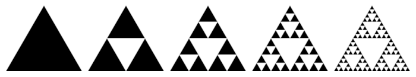The Sierpinski triangle can be covered by three copies of itself, over, and over, and over.
6. Logarithms are related to musical tones and intervals. In equal temperament, the frequency ratio depends only on the interval between two tones, not on the specific frequency, or pitch, of the individual tones. For example, the note A has a frequency of $440$ Hz and B-flat has a frequency of $466$ Hz. The interval between A and B-flat is a semitone, as is the one between B-flat and B (frequency $493$ Hz). Therefore, logarithms can be used to describe the intervals: an interval is measured in semitones by taking the base-$\frac {21}{12}$ logarithm of the frequency ratio.
7. Natural logarithms are closely linked to counting prime numbers ($2, 3, 5, 7$ ...), an important topic in number theory. The prime number theorem states that for large enough N, the probability that a random integer not greater than N is prime is very close to $\frac {1} {log(N)}$ .
Logarithmic and exponential forms are closely related, and an equation in either form can be freely converted into the other.
Convert between exponential and logarithmic equations
Logarithmic equations can be written as exponential equations and vice versa. The logarithmic equation $\log_b(x)=c$ corresponds to the exponential equation $b^{c}=x$ .
As an example, the logarithmic equation $\log{_2}16=4$ can be converted to the exponential equation $2^4=16$ .
The logarithmic equation $\log_4(64)=3$ can be converted into the exponential equation $4^3=64$ .
Conversion from logarithmic to exponential form can help one solve otherwise difficult equations.
Solve for $x$ in the equation $\log{_3}243=x$
Here we are looking for the exponent to which $3$ is raised to yield $243$ . It might be more familiar if we convert the equation to exponential form giving us:
The exponent we seek is $5$ . Thus, $\log{_3}243=5$ .
The explanation of the previous example reveals the inverse of the logarithmic operation: exponentiation. Starting with $243$ , if we take its logarithm with base $3$ , then raise $3$ to the logarithm, we will once again arrive at $243$ .
Solve for $x$ in the equation $\log_6(x-2)=3$
If we write the logarithmic equation as an exponential equation we obtain:
$6^{\log_6(x-2)}=6^3$
As the exponent and log on the left side of the equation undo each other we are left with:
An exponential equation is an equation where the variable we are solving for appears in the exponent.
If the equation consists of two terms set equal to each other and these terms have the same base, then the exponents are equal. We can use this fact to solve such exponential equations as follows:
Solve for $x$ in the equation $5^{5x+8}=5^{x^{2}+3x}$
Here since the bases are both $5$ , the exponents are equal. We use this fact to solve the equation as follows:
$\begin{align} 5x+8&=x^2+3x \\ 0&=x^2+3x-5x-8 \\ 0&=x^2-2x-8 \\ 0&=(x-4)(x+2) \end{align}$
Solve for x in the equation $3^{x+1}=81^x$
Here the bases are not equal, but it is possible to write 81 using a base of 3 as follows:
$\begin{align} 3^{x+1}&=(3^4)^x \\ 3^{x+1}&=3^{4x} \end{align}$
At this point, the left and right sides of the equation have the same base so we can solve for $x$ by setting the two exponents equal to each other:
In many cases, an exponential equation cannot be solved by using the methods of example $3$ and $4$ above because the bases cannot easily be made equal. In these cases taking the logarithm of both sides of the equation allows us to solve the equation. While you can take the log to any base, it is common to use the common log with a base of $10$ or the natural log with the base of $e$ . This is because scientific and graphing calculators are equipped with a button for the common log that reads $log$ , and a button for the natural log that reads $ln$ which allows us to obtain a good approximation for the common or natural log of a number.
Solve for $x$ in the equation $2^x=17$
Here we cannot easily write $17$ with a base of $2$ so instead we take the log of both sides as follows.
Next we use the properties of logarithms to move the variable out of the exponent.
Lastly we divide by $\log2$ to solve for $x$ .
It is important to note that this is an exact answer. We can arrive at an approximation by using the $\log$ button on your calculator.
Solve for $x$ in the equation $2^x=17$ using the natural log
Here we will use the natural logarithm instead to illustrate the fact that any base will do.
Solve for $x$ in the equation $3=4^{5x+18} $
Again, we use logarithms to move the variable out of the exponent allowing us to solve for x as follows:
Now we can use the properties of logarithms to re-write the left hand side and solve for $x$ :
The exponential function $y=b^x$ where $b>0$ is a function that will remain proportional to its original value when it grows or decays.
Describe the properties of graphs of exponential functions
At the most basic level, an exponential function is a function in which the variable appears in the exponent. The most basic exponential function is a function of the form $y=b^x$ where $b$ is a positive number.
When $b>1$ the function grows in a manner that is proportional to its original value. This is called exponential growth.
When $0>b>1$ the function decays in a manner that is proportional to its original value. This is called exponential decay.
Let us consider the function $y=2^x$ when $b>1$ . One way to graph this function is to choose values for $x$ and substitute these into the equation to generate values for $y$ . Doing so we may obtain the following points:
$(-2,\frac{1}{4})$ , $(-1,\frac{1}{2})$ , $(0,1)$ , $(1,2)$ and $(2,4)$
As you connect the points, you will notice a smooth curve that crosses the $y$ -axis at the point $(0,1)$ and is increasing as $x$ takes on larger and larger values. That is, the curve approaches infinity as $x$ approaches infinity. As $x$ takes on smaller and smaller values the curve gets closer and closer to the $x$ -axis. That is, the curve approaches zero as $x$ approaches negative infinity making the $x$ -axis is a horizontal asymptote of the function. The point $(1,b)$ is on the graph. This is true of the graph of all exponential functions of the form $y=b^x$ for $x>1$ .
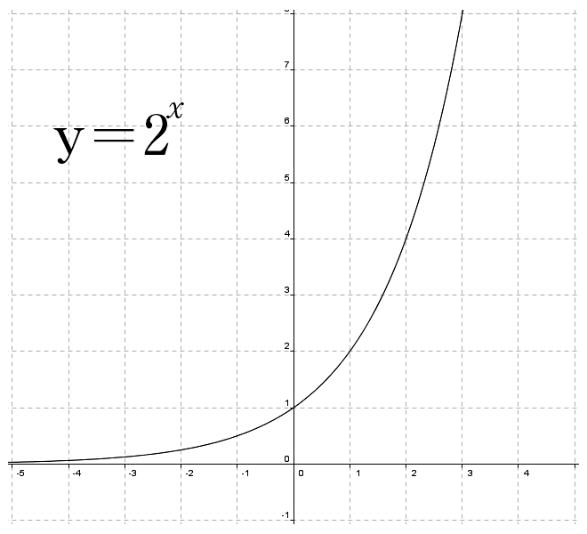The graph of this function crosses the $y$ -axis at $(0,1)$ and increases as $x$ approaches infinity. The $x$ -axis is a horizontal asymptote of the function.
Let us consider the function $y=\frac{1}{2}^x$ when $0<b<1$ . One way to graph this function is to choose values for $x$ and substitute these into the equation to generate values for $y$ . Doing so you can obtain the following points:
$(-2,4)$ , $(-1,2)$ , $(0,1)$ , $(1,\frac{1}{2})$ and $(2,\frac{1}{4})$
As you connect the points you will notice a smooth curve that crosses the y-axis at the point $(0,1)$ and is decreasing as $x$ takes on larger and larger values. The curve approaches infinity zero as approaches infinity. As $x$ takes on smaller and smaller values the curve gets closer and closer to the $x$ -axis. That is, the curve approaches zero as $x$ approaches negative infinity making the $x$ -axis a horizontal asymptote of the function. The point $(1,b)$ is on the graph. This is true of the graph of all exponential functions of the form $y=b^x$ for $0<x<1$ .
As you can see in the graph below, the graph of $y=\frac{1}{2}^x$ is symmetric to that of $y=2^x$ over the $y$ -axis. That is, if the plane were folded over the $y$ -axis, the two curves would lie on each other.
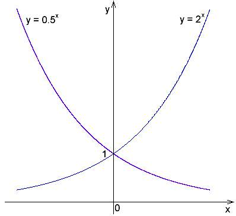The graphs of these functions are symmetric over the $y$ -axis.
If $b=1$ , then the function becomes $y=1^x$ . As $1$ to any power yields $1$ , the function is equivalent to $y=1$ which is a horizontal line, not an exponential equation.
If $b$ is negative, then raising $b$ to an even power results in a positive value for $y$ while raising $b$ to an odd power results in a negative value for $y$ , making it impossible to join the points obtained an any meaningful way and certainly not in a way that generates a curve as those in the examples above.
The point $(0,1)$ is always on the graph of an exponential function of the form $y=b^x$ because $b$ is positive and any positive number to the zero power yields $1$ .
The point $(1,b)$ is always on the graph of an exponential function of the form $y=b^x$ because any positive number $b$ raised to the first power yields $1$ .
The function $y=b^x$ takes on only positive values because any positive number $b$ will yield only positive values when raised to any power.
The function $y=b^x$ has the $x$ -axis as a horizontal asymptote because the curve will always approach the $x$ -axis as $x$ approaches either positive or negative infinity, but will never cross the axis as it will never be equal to zero.
Logarithmic functions can be graphed manually or electronically with points generally determined via a calculator or table.
Describe the properties of graphs of logarithmic functions
Below are graphs of logarithmic functions with bases 2, $e$ , and 10.
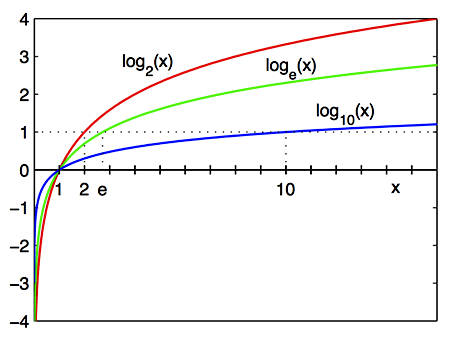After $x=1$ , where the graphs cross the $x$ -axis, $\log_2(x)$ in red is above $\log_e(x)$ in green, which is above $\log_{10}(x)$ in blue. Before this point, the order is reversed. All three logarithms have the $y$ -axis as a vertical asymptote, and are always increasing.
All three logarithmic graphs begin with a steep climb after $x=0$ , but stretch more and more horizontally, their slope ever-decreasing as $x$ increases. All of them cross the $x$ -axis at $x=1$ .
The graph crosses the $x$ -axis at $1$ . That is, the graph has an $x$ -intercept of $1$ , and as such, the point $(1,0)$ is on the graph. In fact, the point $(1,0)$ will always be on the graph of a function of the form $y=log{_b}x$ where $b>0$ . This is because for $x=1$ , the equation of the graph becomes $y=log{_b}1$ .
Thus, we are looking for an exponent $y$ such that $b^y=1$ . As $b>0$ , the exponent we seek is $1$ irrespective of the value of $b$ . This means the point $(x,y)=(1,0)$ will always be on a logarithmic function of this type.
The $y$ -axis is a vertical asymptote of the graph. This means that the curve gets closer and closer to the $y$ -axis but does not cross it.
Let us consider what happens as the value of $x$ approaches zero from the right for the equation whose graph appears above. Namely, $y=log{_b}x$ . We can do this by choosing values for $x$ , plugging them into the equation and generating values for $y$ .
Let us assume that $b$ is a positive number greater than $1$ , and let us investigate values of $x$ between $0$ and $1$ . Under these conditions, if we let $x=\frac{1}{b}$ , the equation becomes $y=log\frac{1}{b}$ .
Thus, we are looking for an exponent such that $b$ raised to that exponent yields $\frac{1}{b}$ . The exponent we seek is $-1$ and the point $(\frac{1}{b},-1)$ is on the graph. Similarly, we can obtain the following points that are also on the graph:
$(\frac{1}{b^2},-2),(\frac{1}{b^3},-3),(\frac{1}{b^4},-4)$ and so on
If we take values of $x$ that are even closer to $0$ , we can arrive at the following points: $(\frac{1}{b^{10}},-10),(\frac{1}{b^{100}},-100)$ and $(\frac{1}{b^{1000}},-1000)$
As can be seen the closer the value of $x$ gets to $0$ , the more and more negative the graph becomes. That is, as $x$ approaches zero the graph approaches negative infinity. This means that the $y$ -axis is a vertical asymptote of the function.
The domain of the function is all positive numbers. That means that the $x$ -value of the function will always be positive. Let us begin by considering why the $x$ -value of the curve is never $0$ .
If the $x$ -value were zero, the function would read $y=log{_b}0$ .
Here we are looking for an exponent such that $b$ raised to that exponent is $0$ . Since $b$ is a positive number, there is no exponent that we can raise $b$ to so as to obtain $0$ . In fact, since $b$ is positive, raising it to a power will always yield a positive number.
The range of the function is all real numbers. That is, the graph can take on any real number.
At first glance, the graph of the logarithmic function can easily be mistaken for that of the square root function.
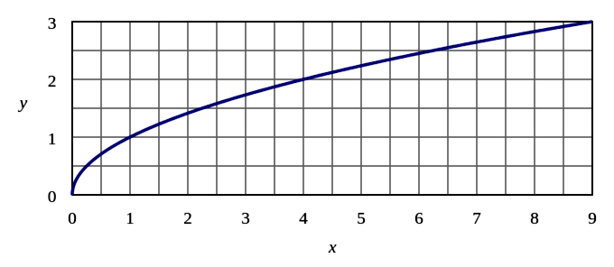The graph of the square root function resembles the graph of the logarithmic function, but does not have a vertical asymptote. Half of a sideways parabola (u-shaped curve) with a vertex at the origin. It does not have a vertical asymptote like a logarithmic function, as it touches the y-axis.
Both the square root and logarithmic functions have a domain limited to $x$ -values greater than $0$ . However, the logarithmic function has a vertical asymptote descending towards $-\infty$ as $x$ approaches $0$ , whereas the square root reaches a minimum $y$ -value of $0$ . The range of the square root function is all non-negative real numbers, whereas the range of the logarithmic function is all real numbers.
Graphing logarithmic functions can be done by locating points on the curve either manually or with a calculator.
When graphing without a calculator, we use the fact that the inverse of a logarithmic function is an exponential function.
When graphing with a calculator, we use the fact that the calculator can compute only common logarithms (base is $10$ ), natural logarithms (base is $e$ ) or binary logarithms (base is $2$ ). Of course, if we have a graphing calculator, the calculator can graph the function without the need for us to find points on the graph.
Logarithmic functions can be graphed by hand without the use of a calculator if we use the fact that they are inverses of exponential functions.
Let us again consider the graph of the following function:
$y=log{_3}x$
This can be written in exponential form as:
Now let us consider the inverse of this function. To do so, we interchange $x$ and $y$ :
$3^x=y$
The exponential function $3^x=y$ is one we can easily generate points for. If we take some values for $x$ and plug them into the equation to find the corresponding values for $y$ we can obtain the following points:
$(-2,\frac{1}{9}),(-1,\frac{1}{3}),(0,1),(1,3),(2,9)$ and $(3,27)$
Now we must note that these points are not on the original function ($y=log{_3}x$ ) but rather on its inverse $3^x=y$ . However, if we interchange the $x$ and $y$ -coordinates of each point we will in fact obtain a list of points on the original function.
These are: $(\frac{1}{9},-2),(\frac{1}{3},-1),(1,0),(3,1),(9,2)$ and $(27,3)$ .
We plot and connect these points to obtain the graph of the function $y=log{_3}x$ below.
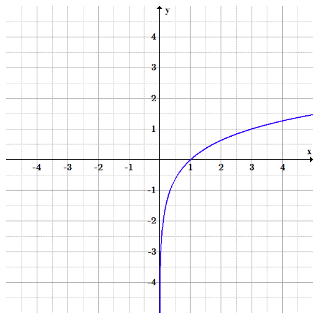The graph of the logarithmic function with base $3$ can be generated using the function's inverse. Its shape is the same as other logarithmic functions, just with a different scale.
Thus far we have graphed logarithmic functions whose bases are greater than $1$ . If we instead consider logarithmic functions with a base $b$ , such that $0<b<1$ , we get a graph that is very similar to those we have seen already.
In fact if $b>0$ , the graph of $y=log{_b}x$ and the graph of $y=log{_\frac{1}{b}}x$ are symmetric over the $x$ -axis. Thus, if we identify a point $(x,y)$ on the graph of $y=log{_b}x$ , we can find the corresponding point on $y=log{_\frac{1}{b}}x$ by changing the sign of the $y$ -coordinate. The corresponding point is $(x,-y)$ .
Here is an example for $b=2$ .
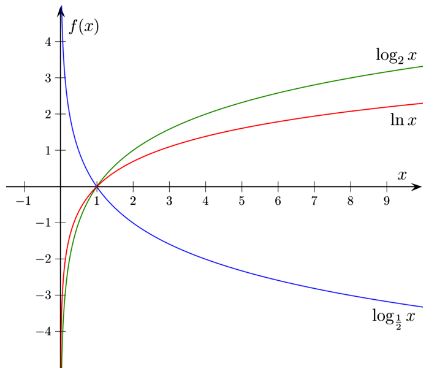The graphs of $log_2 x$ and $log{_\frac{1}{2}}x$ are symmetric over the x-axis. log_2(x) is increasing from the y-axis (its vertical asymptote) to infinity. log_.5(x) is decreasing from the y-axis (also its vertical asymptote) to negative infinity.
Some functions with rapidly changing shape are best plotted on a scale that increases exponentially, such as a logarithmic graph.
Convert problems to logarithmic scales and discuss the advantages of doing so
Many mathematical and physical relationships are functionally dependent on high-order variables. This means that for small changes in the independent variable there are very large changes in the dependent variable. Thus, it becomes difficult to graph such functions on the standard axis.
Consider, as an example, the Stefan-Boltzmann law, which relates the power (j*) emitted by a black body to temperature (T).
On a standard graph, this equation can be quite unwieldy. The fourth-degree dependence on temperature means that power increases extremely quickly. The fact that the rate is ever-increasing (and steeply so) means that changing scale (scaling the axes by $5$ , $10$ or even $100$ ) is of little help in making the graph easier to interpret.
For very steep functions, it is possible to plot points more smoothly while retaining the integrity of the data: one can use a graph with a logarithmic scale, where instead of each space on a graph representing a constant increase, it represents an exponential increase. Where a normal (linear) graph might have equal intervals going 1, 2, 3, 4, a logarithmic scale would have those same equal intervals represent 1, 10, 100, 1000. Here are some examples of functions graphed on a linear scale, semi-log and logarithmic scales.
The top left is a linear scale. The bottom right is a logarithmic scale. The top right and bottom left are called semi-log scales because one axis is scaled linearly while the other is scaled using logarithms.
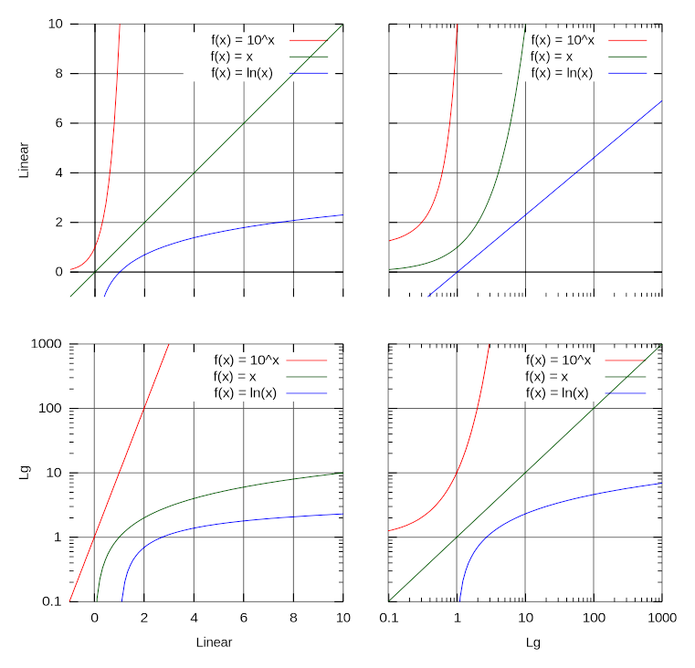The graphs of functions $f(x)=10^x,f(x)=x$ and $f(x)=\log x$ on four different coordinate plots. Top Left is a linear scale, top right and bottom left are semi-log scales and bottom right is a logarithmic scale. The linear and logarithmic scales preserve the relative shapes of the functions. The semi-log scales, where only the x or y axis is on a logarithmic scale, skew the shapes of the graphs relative to both axes having the same scale.
As you can see, when both axis used a logarithmic scale (bottom right) the graph retained the properties of the original graph (top left) where both axis were scaled using a linear scale. That means that if we want to graph a function that is unwieldy on a linear scale we can use a logarithmic scale on each axis and retain the properties of the graph while at the same time making it easier to graph.
With the semi-log scales, the functions have shapes that are skewed relative to the original. When only the $x$ -axis has a log scale, the logarithmic curve appears as a line and the linear and exponential curves both look exponential. When only the $y$ -axis has a log scale, the exponential curve appears as a line and the linear and logarithmic curves both appear logarithmic.It should be noted that the examples in the graphs were meant to illustrate a point and that the functions graphed were not necessarily unwieldy on a linearly scales set of axes.
The primary difference between the logarithmic and linear scales is that, while the difference in value between linear points of equal distance remains constant (that is, if the space from $0$ to $1$ on the scale is $1$ cm on the page, the distance from $1$ to $2$ , $2$ to $3$ , etc., will be the same), the difference in value between points on a logarithmic scale will change exponentially. A logarithmic scale will start at a certain power of $10$ , and with every unit will increase by a power of $10$ .
Thus, if one wanted to convert a linear scale (with values $0-5$ to a logarithmic scale, one option would be to replace $1,2,3,4$ and 5 with $0.001,0.01,0.1,1,10$ and $100$ , respectively. Between each major value on the logarithmic scale, the hashmarks become increasingly closer together with increasing value. For example, in the space between $1$ and $10$ , the $8$ and $9$ are much closer together than the $2$ and $3$ .
The advantages of using a logarithmic scale are twofold. Firstly, doing so allows one to plot a very large range of data without losing the shape of the graph. Secondly, it allows one to interpolate at any point on the plot, regardless of the range of the graph. Similar data plotted on a linear scale is less clear.
A key point about using logarithmic graphs to solve problems is that they expand scales to the point at which large ranges of data make more sense. In the equation mentioned above ($j^*= \sigma T^4$ ), plotting $j$ vs. $T$ would generate the expected curve, but the scale would be such that minute changes go unnoticed and the large scale effects of the relationship dominate the graph: It is so big that the "interesting areas" won't fit on the paper on a readable scale.
Taking the logarithm of each side of the equations yields: $logj=log{(\sigma\tau ) }^4 $ . We now rely on the properties of logarithms to re-write the equation.
Recall the following properties of logarithms:
Using the above, our equation becomes:
A useful property of logarithms states that the logarithm of a product of two quantities is the sum of the logarithms of the two factors. In symbols, $\log_b(xy)=\log_b(x)+\log_b(y).$
Relate the product rule for logarithms to the rules for operating with exponents, and use this rule to rewrite logarithms of products
The logarithm of a number is the exponent by which another fixed value, the base, has to be raised to produce that number. For example, the logarithm of $1000$ in base $10$ is $3$ , because $10^3=1000.$
More generally, if $x=b^y$ , then $y$ is the logarithm base $b$ of $x$ , written: $y=\log_b(x)$ , so $\log_{10}(1000)=3$ .
It is useful to think of logarithms as inverses of exponentials. So, for example:
$\displaystyle \log_b(b^z)=z$
And:
Logarithms were introduced by John Napier in the early 17th century as a means to simplify calculations. Logarithms were rapidly adopted by navigators, scientists, engineers, and others to perform computations more easily by using slide rules and logarithm tables. Tedious multi-digit multiplication steps can be replaced by table look-ups and simpler addition, because of the fact that the logarithm of a product is the sum of the logarithms of the factors:
We can see that this rule is true by writing the logarithms in terms of exponentials.
Let $\log_b(x)=v$ and $\log_b(y)=w.$
Writing these equations as exponentials:
$\displaystyle b^v=x$
And:
$\displaystyle b^w=y.$
Then note that:
$\displaystyle \begin{align} xy&=b^vb^w\\ &=b^{v+w} \end{align}$
Taking the logarithm base $b$ of both sides of this last equation yields:
This is a very useful property of logarithms, because it can sometimes simplify more complex expressions. For example:
$\displaystyle \log_{10}(10^x\cdot 100^{x^3+1})=\log_{10} (10^x)+\log_{10}(100^{x^3+1}) $
Then because $100$ is $10^2$ , we have:
$\displaystyle \begin{align} x+\log_{10}(10^{2(x^3+1)}) &= x+2(x^3+1)\\ &=2x^3+x+2 \end{align}$
The logarithm of the $p\text{th}$ power of a quantity is $p$ times the logarithm of the quantity. In symbols, $\log_b(x^p)=p\log_b(x).$
Relate the power rule for logarithms to the rules for operating with exponents, and use this rule to rewrite logarithms of powers
We have already seen that the logarithm of a product is the sum of the logarithms of the factors:
$\displaystyle \log _b \left( {xy} \right) = \log _b \left( x \right) + \log _b \left( y \right)$
If we apply this rule repeatedly we can devise another rule for simplifying expressions of the form $\log_b x^p$ .
Recall that $x^p$ can be thought of as $x \cdot x \cdot x \cdots x$ where there are $p$ factors of $x$ . Then we have:
$\displaystyle \begin{align} \log_b(x^p) &= \log_b (x \cdot x \cdots x) \\ &= \log_b x + \log_b x + \cdots +\log_b x \\ &= p\log_b x \end{align}$
Since the $p$ factors of $x$ are converted to $p $ summands by the product rule formula.
First expand the log:
$\displaystyle \log_3(3^x\cdot 9x^{100}) =\log_3 (3^x) + \log_3 9 + \log_3(x^{100}) $
Next use the product and power rule to simplify:
Start by taking the logarithm with base $2$ of both sides:
$\displaystyle \begin{align} \log_2 (2^{(x+1)}) &= \log_2 (10^3)\\ x+1&=3\log_2(10)\\ x&=3\log_2(10)-1 \end{align}$
Therefore a solution would be $x=3\log_2(10) -1. $
The logarithm of the ratio of two quantities is the difference of the logarithms of the quantities. In symbols, $\log_b\left( \frac{x}{y}\right) = \log_bx - \log_by.$
Relate the quotient rule for logarithms to the rules for operating with exponents, and use this rule to rewrite logarithms of quotients
We have already seen that the logarithm of a product is the sum of the logarithms of the factors:
Similarly, the logarithm of the ratio of two quantities is the difference of the logarithms:
$\displaystyle \log_b\left( \frac{x}{y}\right) = \log_bx - log_by.$
We can show that this is true by the following example:
Let $u=\log_b x$ and $v=\log_b y$ .
Then $b^u=x$ and $b^v=y.$
Then:
Another way to show that this rule is true, is to apply both the power and product rules and the fact that dividing by $y$ is the same is multiplying by $y^{-1}.$ So we can write:
$\displaystyle \begin{align} \log_b\left(\frac{x}{y}\right)&=\log_b(x\cdot y^{-1})\\ & = \log_bx + \log_b(y^{-1})\\& = \log_bx -\log_by \end{align}$
By applying the product, power, and quotient rules, you could write this expression as:
A logarithm written in one base can be converted to an equal quantity written in a different base.
Use the change of base formula to convert logarithms to different bases
Most common scientific calculators have a key for computing logarithms with base $10$ , but do not have keys for other bases. So, if you needed to get an approximation to a number like $\log_4(9)$ it can be difficult to do so. One could easily guess that it is between $1$ and $2$ since $9$ is between $4^1$ and $4^2$ , but it is difficult to get an accurate approximation. Fortunately, there is a change of base formula that can help.
The change of base formula for logarithms is:
Thus, for example, we could calculate that $\log_4(9)=\frac{\log_{10}(9)}{\log_{10}(4)}$ which could be computed on almost any handheld calculator.
To see why the formula is true, give $\log_a(x)$ a name like $z$ :
$\displaystyle z=\log_a(x)$
Write this as $a^z=x$
Now take the logarithm with base $b$ of both sides, yielding:
$\displaystyle \log_b a^z = \log_bx$
Using the power rule gives:
$\displaystyle z \cdot \log_ba = \log_b x$
Dividing both sides by $\log_ba$ gives:
$\displaystyle z={\log_b x \over \log_ba}.$
Thus we have $\log_a x ={\log_b x \over \log_b a}. $
An expression of the form $\log_5(10^{x^2+1})$ might be easier to graph on a graphing calculator or other device if it were written in base $10$ instead of base 5. The change-of-base formula can be applied to it:
$\displaystyle \log_5(10^{x^2+1}) = {\log_{10}(10^{x^2+1}) \over \log_{10}5}$
Which can be written as ${x^2+1 \over \log_{10} 5}. $
The number $e$ is an important mathematical constant, approximately equal to $2.71828$ . When used as the base for a logarithm, we call that logarithm the natural logarithm and write it as $\ln x$ .
Recognize the properties and uses of the number
The number $e$ , sometimes called the natural number, or Euler's number, is an important mathematical constant approximately equal to 2.71828. When used as the base for a logarithm, the corresponding logarithm is called the natural logarithm, and is written as $\ln (x)$ . Note that $\ln (e) =1$ and that $\ln (1)=0$ .
There are a number of different definitions of the number $e$ . Most of them involve calculus. One is that $e$ is the limit of the sequence whose general term is $(1+{1 \over n})^n$ . Another is that $e$ is the unique number so that the area under the curve $y=1/x$ from $x=1$ to $x=e$ is $1$ square unit.
Another definition of $e$ involves the infinite series $1+\frac{1}{1!}+\frac{1}{2!}+\frac{1}{3!}+\frac{1}{4! }+....$ . It can be shown that the sum of this series is $e$ .
The number $e$ is very important in mathematics, alongside $0, 1, i, \, \text{and} \, \pi.$ All five of these numbers play important and recurring roles across mathematics, and are the five constants appearing in the formulation of Euler's identity, which (amazingly) states that $e^{i\pi}+1=0.$ Like the constant $\pi$ , $e$ is irrational (it cannot be written as a ratio of integers), and it is transcendental (it is not a root of any non-zero polynomial with rational coefficients).
One of the many places the number $e$ plays a role in mathematics is in the formula for compound interest. Jacob Bernoulli discovered this constant by asking questions related to the amount of money in an account after a certain number of years, if the interest is compounded $n$ times per year. He was able to come up with the formula that if the interest rate is $r$ percent and is calculated $n$ times per year, and the account originally contained $P$ dollars, then the amount in the account after $t$ years is given by $A=P(1+{r \over n})^{nt}.$ By then asking about what happens as $n$ gets arbitrarily large, he was able to come up with the formula for continuously compounded interest, which is $A=Pe^{rt}.$
The function $f(x) = e^x$ is a basic exponential function with some very interesting properties.
Identify important properties about the graph of
The basic exponential function, sometimes referred to as the exponential function, is $f(x)=e^{x}$ where $e$ is the number (approximately 2.718281828) described previously. Its graph lies between the graphs of $2^x$ and $3^x$ . The graph's $y$ -intercept is the point $(0,1)$ , and it also contains the point $(1,e).$ Sometimes it is written as $y=\exp (x)$ .
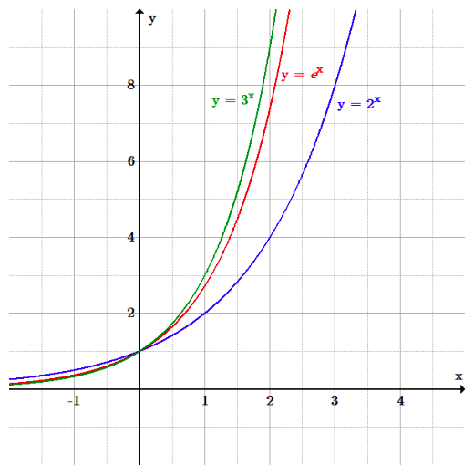The graph of $y=e^x$ lies between that of $y=2^x$ and $y=3^x$ .
The graph of $y=e^{x}$ is upward-sloping, and increases faster as $x$ increases. The graph always lies above the $x$ -axis, but gets arbitrarily close to it for negative $x$ ; thus, the $x$ -axis is a horizontal asymptote. The graph of $e^x$ has the property that the slope of the tangent line to the graph at each point is equal to its $y$ -coordinate at that point. $y=e^x$ is the only function with this property.
The exponential function is used to model a relationship in which a constant change in the independent variable gives the same proportional change (i.e., percentage increase or decrease) in the dependent variable. If the change is positive, this is called exponential growth and if it is negative, it is called exponential decay. For example, because a radioactive substance decays at a rate proportional to the amount of the substance present, the amount of the substance present at a given time can be modeled with an exponential function. Also, because the the growth rate of a population of bacteria in a petri dish is proportional to its size, the number of bacteria in the dish at a given time can be modeled by an exponential function such as $y=Ae^{kt}$ where $A$ is the number of bacteria present initially (at time $t=0$ ) and $k$ is a constant called the growth constant.
The natural logarithm is the logarithm to the base e, where e is an irrational and transcendental constant approximately equal to 2.718281828.
Identify some properties and uses of the natural logarithm
The logarithm of a number is the exponent by which another fixed value, the base, has to be raised to produce that number. The natural logarithm is the logarithm with base equal to e.
The natural logarithm can be written as $\log_e x$ but is usually written as $\ln x$ . The two letters l and n are reversed from the order in English because it arises from the French (logarithm naturalle).
Just as the exponential function with base $e$ arises naturally in many calculus contexts, the natural logarithm, which is the inverse function of the exponential with base $e$ , also arises in naturally in many contexts. It is used much more frequently in physics, chemistry, and higher mathematics than other logarithmic functions. For example, the doubling time for a population which is growing exponentially is usually given as ${\ln 2 \over k}$ where $k$ is the growth rate, and the half-life of a radioactive substance is usually given as ${\ln 2 \over \lambda}$ where $\lambda$ is the decay constant.
The function slowly grows to positive infinity as $x$ increases and rapidly goes to negative infinity as $x$ approaches $0$ ("slowly" and "rapidly" as compared to any power law of $x$ ). The $y$ -axis is an asymptote. The graph of the natural logarithm lies between that of $y=\log_2 x$ and $y=\log_3 x$ . Its value at $x=1$ is $0$ , while its value at $x=e$ is $1$ .
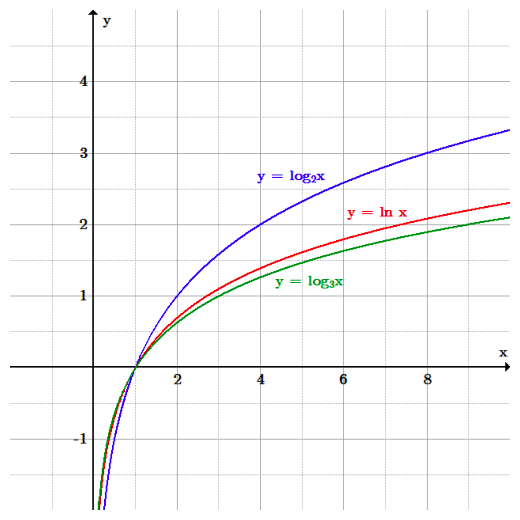The graph of the natural logarithm lies between the base 2 and the base 3 logarithms.
The natural logarithm function can be used to solve equations in which the variable is in an exponent.
The first step is to take the natural logarithm of both sides:
Using the power rule of logarithms it can then be written as:
$\displaystyle (x^2-1) \ln 3 = \ln 8$
Dividing both sides by $\ln(3)$ gives:
$\displaystyle x^2-1={\ln 8 \over \ln 3}$
Thus the positive solution is $x=\sqrt{{\ln 8 \over \ln 3} + 1}.$ This can be calculated (approximately) with any scientific handheld calculator.
Population can fluctuate positively or negatively and can be modeled using an exponential function.
Use exponential functions to represent population growth
Population growth can be modeled by an exponential equation. Namely, it is given by the formula $P(r, t, f)=P_i(1+r)^\frac{t}{f}$ where $P{_i}$ represents the initial population, r is the rate of population growth (expressed as a decimal), t is elapsed time, and f is the period over which time population grows by a rate of r. The ratio of t to f is often simplified into one value representing the number of compounding cycles.
The rate $r$ by which the population is growing is itself a function of four variables. These are births ($B$ ), deaths ($D$ ), immigrants ($I$ ) and emigrants ($E$ ). Specifically, the rate is given by:
${\Delta}P=(B-D)+(I-E)$
${\Delta}P$ denotes the change in population. The formula is split into natural growth which accounts for births and deaths ($B-D$ ) and mechanical growth which accounts for people moving into and out of a particular region ($I-E$ ).
The population size can fluctuate from growth to decline, and back again. As such, another variable is important when studying population demographics and dynamics. It is the Population Growth Rate ($PGR$ ).
$PGR$ is the rate of change in population over a certain span of time: $t_2-t_1$ . It can be determined using the formula:
$\displaystyle PGR=\frac{ln(P(t_2))-ln(P(t_1))}{(t_2-t_1)}$
If we multiply the $PGR$ by $100$ we arrive at the percentage growth relative to the population at the beginning of the time period.
A positive growth rate indicates an increasing population size, while a negative growth rate is characteristic of a decreasing population. A growth rate of $0$ means stagnation in population size.
In demographics, the world population is the total number of humans currently living. As of March 2016, it was estimated at 7.4 billion, an all-time high. The United Nations estimates it will further increase to 11.2 billion in the year 2100. If the current rates of births and deaths hold, the world population growth can be modeled using an exponential function. The graph below shows an exponential model for the growth of the world population.
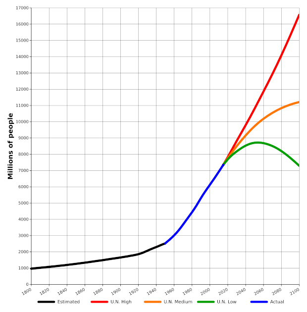The projected world population growths after the present day must be projected. A high estimation predicts the graph to continue at an increasing rate, a medium estimation predicts the population to level off, and a low estimation predicts the population to decline.
The graph has the general shape of an exponential curve though it is not exact as is the case usually when we deal with real data as opposed to purely mathematical constructs. The data is at times estimated, at times actual and at times projected. Projections for high (red), medium (orange) and low (green) rates of change are represented accounting for the splitting off of the curve after 2016.
A realistic model of exponential growth must dampen when approaching a certain value. This limited growth is modelled with the logistic growth model: $P(t)=\frac{c}{1+a\cdot e^{-bt}}$ .
Use logistic functions to represent limited growth
Exponential functions can be used to model growth and decay. For example, the world's human population is growing exponentially as can be seen in the following graph.
Three projections for the world's population are shown, with a low estimate reaching a peak and then decreasing, a medium estimate increasing but at an ever-slower rate, and a high estimate continuing to increase exponentially.
There is, however, a limit to how accurate a model such as this can be. Even if we account for varying rates of growth, the idea that human population can be modeled strictly with an exponential function is misguided. Exponential functions are ever-increasing so saying that an exponential function models population growth exactly means that the human population will grow without bound. That is not sound reasoning, as the human population is affected by various factors among these are access to resources such as food, water, and shelter. At some point in the future, the number of humans will grow so large that there will not be enough resources to sustain growth. Thus the exponential model, while perhaps useful in the short-term, is not accurate in the long-term for real world simulation. At some point the growth must level off. This is the idea behind limited growth, that a population may grow exponentially but only to a point at which time the growth will taper off.
As an alternative, consider a farm upon which a population of sheep are kept in a constant, comfortable climate in a fully enclosed field. Assume the entire system is closed from gains and losses, but for a flow of a stream of clean drinking water through the field.
With no predators, the population of sheep would perfectly fit an exponential model to a certain point when the availability of food would act as a limiting factor. If the amount of grass available to the sheep and its rate of replenishing are constant, eventually the population of sheep will grow to a tipping point at which there is no longer enough grass to feed the sheep. The death rate of sheep will increase as some starve. Thus, the model of population growth among sheep will no longer be exponential.
To account for limitations in growth, the logistic growth model can be used. The logistic growth model is given by $P(t)=\frac{c}{1+a\cdot e^{-bt}}$ where $P$ represents the present population, $c$ is the carrying capacity (the maximum the population approaches as time approaches infinity), $b$ is the population growth rate, $t$ is time, and $a$ is the difference between carrying capacity and initial population.
Given various conditions, it is possible to evaluate a logistic function for a particular value of $t$ . That is, it is possible to determine the population at time $t$ , given values for $c,a,b$ and $t$ .
To evaluate this function we plug $6$ into the equation in place of $t$ as follows.
Graphically, the logistic function resembles an exponential function followed by a logarithmic function that approaches a horizontal asymptote. This horizontal asymptote represents the carrying capacity. That is, $y=c$ is a horizontal asymptote of the graph. Additionally, $y=o$ is also a horizontal asymptote. From the left, it grows rapidly, but that growth is dampened as time passes to where it reaches a maximum. The function's domain is the set of all real numbers, whereas its range is $0<y<c$ . Below is the graph of a logistic function.
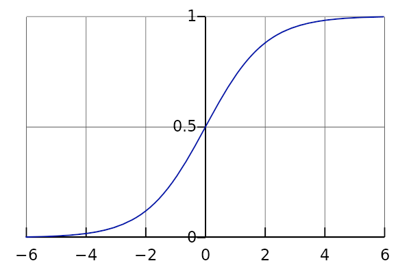Logistic functions have an "s" shape, where the function starts from a certain point, increases, and then approaches an upper asymptote.
Compound interest is accrued when interest is earned not only on principal, but on previously accrued interest: it is interest on interest.
Differentiate between simple interest and compound interest
Fundamentally, compound interest is an application of exponential functions that is found very commonly in every day life. Interest is, generally, a fee charged for the borrowing of money. The two classic cases are (1) interest accrued as part of loan and (2) interest accrued in a savings or other account. In the first case the client owes the amount borrowed plus the interest. In the second, the bank pays the client interest for maintaining money in the account. If you are the client, you are losing money in the first case and earning money in the second.
The amount of interest accrued depends on the principal (amount borrowed/deposited), the interest rate (a percentage of the principal), period (amount of time between interest payments) and time elapsed.
For questions of interest, unless otherwise stated, the amount borrowed/deposited remains unchanged. The client does not, for example, add or withdraw funds from the savings account after the initial deposit (the principal) is made.
There exist two kinds of interest: simple and compound.
In simple interest, interest is accrued on the principal alone. This means that the amount of interest earned in each compounding period is the same because interest is earned based on the principal which remains unchanged.
In compound interest, interest is accrued on both the principal and on prior interest earned. For this reason, if all other conditions are the same (principal, rate, time elapsed and frequency of interest payments) compound interest grows at a faster rate than simple interest. The amount of interest earned increases with each compounding period.
Simple interest is accrued linearly based on the formula:
$\displaystyle I=p\cdot r \cdot \frac{t}{f}$
Where $I$ represents the interest, $p$ is the principal, $r$ is interest rate (expressed as a decimal), $t$ is time elapsed, and $f$ is the time elapsed per interest payment. The ratio of $t$ to $f$ is often simplified to the number of interest payments. Total amount owed/earned which includes the principal and the interest is given by $A=P+I$ .
Let us begin by determining the interest at the end of the first year. We use the formula $I=p\cdot r \cdot \frac{t}{f}$ with $p=100$ , $r=.05$ , $t=1$ and $f=1$ . The interest earned at the end of the year is:
The amount in the account at the conclusion of the year is given by $100+5=105$ . It is useful to note that the account will earn \$$5$ in interest every single year irrespective of how long the money is in the account or what the amount in the account is during any given year. This can be seen by the fact that the amount after $n$ years is given by a linear function with slope equal to five (see table below).
The table below shows the calculations, interest earned and total amount in the account after 1, 2, 3, 4, and n years.
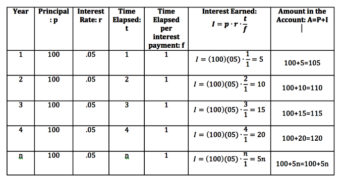Compound interest is not linear, but exponential in form. That is, the amount of interest earned is not constant but instead changes with time based on the total amount of the amount in the account.
The equation representing investment value as a function of principal, interest rate, period and time is:
$\displaystyle M=p(1+r)^\frac{t}{f}$
Where $M$ represents the total value (including principal), $p$ represents principal, $r$ is interest rate (expressed as a decimal), $t$ is time elapsed, and $f$ is the length of time between payments. To calculate interest alone, simply subtract the principal from $M$ .
We now re-consider Example 1 above. This time we use compound interest instead.
Let us begin by determining the amount in the account after the first year using the formula $M=p(1+r)^\frac{t}{f}$ with $p=100$ , $r=.05$ , $t=1$ and $f=1$ . The amount in the account after one year is:
$\displaystyle \begin{align} M&=(100)(1+.05)^\frac{1}{1}\\ &=105 \end{align}$
This is the exact amount that was in the account after the first year using simple interest. That is because the difference is that compound interest earns interest on both the principal and prior interest. At the end of the first year there was no prior interest in the account. We will see differences between simple and compound interest in this, and similar problems, in the second year.
Let us determine the amount in the account after the second year again using the formula $M=p(1+r)^\frac{t}{f}$ but now letting $t=2$ . We obtain:
$\displaystyle \begin{align} M&=100(1+.05)^\frac{2}{1}\\ &=110.25 \end{align}$
That is, there are $25$ cents more in account in the second year using compound interest instead of simple interest. This might not seem like a lot but the amount of interest earned will continue to increase each year as there is more and more money in the account. Every year the interest earned will be higher than in the previous year, whereas in simple interest the amount each year is fixed.
The following table includes the calculations, interest earned and total amount in the account at the end of $1,2,3,4$ and $n$ years.
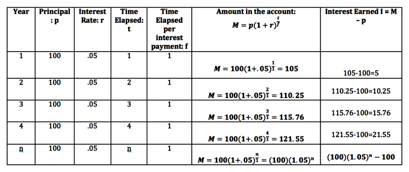The amount in the account is greater each year beginning with year two when using compound interest rather than simple interest. However, because the principal is so small and the number of years elapsed only 4, it does not appear that the difference between the two example is that great. Let us consider one last problem where we let the time elapsed be much greater.
The biggest differences between the amount of money in an account using simple versus compound interest are seen over extended periods of time. To highlight this, we return the the examples we did prior and now consider how much money is in each account after 50 years.
The money in the account using simple interest after $50$ years is given by
$\displaystyle \begin{align} P+I&=100+(100)(.05)(\frac{50}{1})\\ &=350 \end{align}$
However, the amount in the account using compound interest after $50$ years is given by:
$\displaystyle \begin{align} M&=(100)(1+.05)^\frac{50}{1}\\ &=1146.74 \end{align}$
A difference of \$$796.74$ .
The more frequent the compounding periods the more interest is accrued. Therefore, if one deposits money into a bank account that earns compound interest, and does not add or withdraw any additional funds, the amount of money in the bank would increase as the number of compounding periods per year increases. You earn more interest when interest is compounded quarterly ($4$ times a year) than once a year. You earn more interest when interest is compounded monthly ($12$ times a year) than quarterly. You earn more interest when interest is compounded daily ($365$ times a year) than monthly and so on. You earn the most interest when interest is compounded continuously.
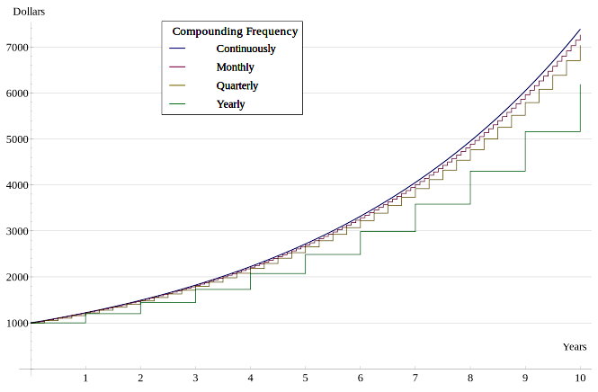Starting with a principal of \$1000, interest rises exponentially. The graph shows that the more frequent the number of compounding periods the more interest is accrued and shows this visually for yearly, quarterly, monthly and continuous compounding.
Given that the more frequent the compounding periods per year, the more interest is accrued it might come as a surprise that money deposited into a bank account accrues compound interest continuously. You might expect the bank would choose a smaller number of compounding periods in order to pay out less in interest, but this is not the case. To see why let us take the following example: You deposit \$$1$ in the bank in an account earning $100$ % interest. You do not add or withdraw money from the account. In this situation the amount of money in the account will be given by $(1+\frac{1}{n})^n$ where $n$ is the number of compounding periods and $\frac{1}{n}$ is the rate per compounding period. This is a simplification of the prior formula used because of the specific conditions of this most recent situation. We expect that as $n$ increases the amount in the account also increases, but if the amount grows without bounds then banks would be giving away much money as they compound interest continuously.
The following table shows the amount in the account at the end of one year when interest is compounded with differing frequencies.
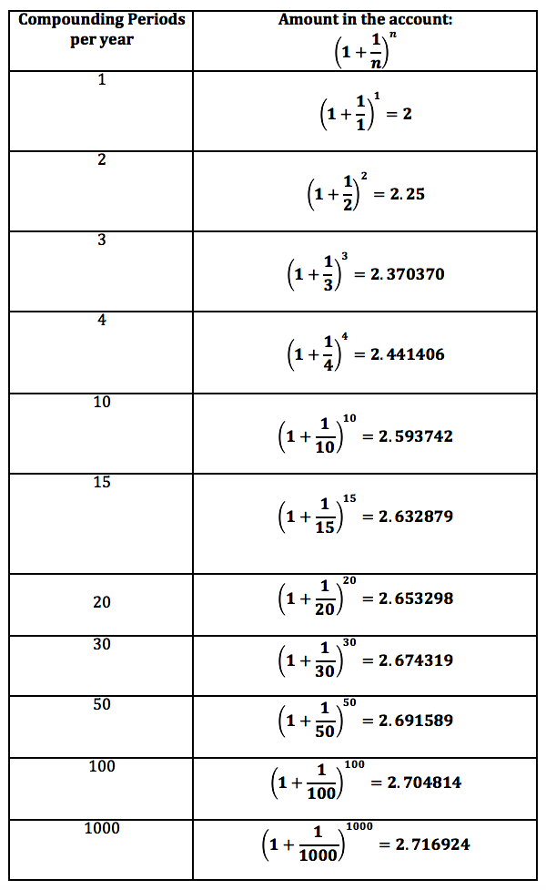What we see from the table is that while the interest earned increases as the number of compounding periods increase, that the rate at which it increases is slowing down. Going from $1$ to $4$ compounding periods yields an increase of $44$ cents but going from $100$ to $1000$ barely raises the interest $1$ cent. Another way of saying this is that the amount in the account is approaching a limiting value. The numbers in the table are getting closer and closer to the number $e$ . The number $e$ is used as the base of the natural logarithm and is equal to approximately $2.718281828$ . No matter how long the money is in the account, it will not grow beyond that value.
The formula for compound interest with the number of compounding periods going to infinity yields the formula for compounding continuously. It should come as no surprise that this formula involves the number $e$ .
The formula for the amount of money in an account where interest is compounded continuously is given by $A=Pe^{rt}$ where $P$ is the principal, $r$ is the annual rate written as a decimal and $t$ is the time in years.
Exponential decay is the result of a function that decreases in proportion to its current value.
Use the exponential decay formula to calculate how much of something is left after a period of time
Just as it is possible for a variable to grow exponentially as a function of another, so can the a variable decrease exponentially. Consider the decrease of a population that occurs at a rate proportional to its value. This rate at which the population is decreasing remains constant but as the population is continually decreasing the overall decline becomes less and less steep.
Exponential rate of change can be modeled algebraically by the following formula:
where $N$ is the quantity, $N{_0}$ is the initial quantity, $\lambda$ is the decay constant, and $t$ is time. The decay constant is indeed a constant, but the form of the equation (the negative exponent of e) results in an ever-changing rate of decline.
The time it takes for a substance (drug, radioactive nuclide, or other) to lose half of its pharmacological, physiological, biological, or radiological activity is called its half-life. The exponential decay of the substance is a time-dependent decline and a prime example of exponential decay.
As an example let us assume we have a $100$ pounds of a substance with a half-life of $5$ years. Then in $5$ years half the amount ($50$ pounds) remains. In another $5$ years there will be $25$ pounds remaining. In another $5$ years, or $15$ years from the beginning, there will be $12.5$ . The amount by which the substance decreases, is itself slowly decreasing.
Half-life is very useful in determining the age of historical artifacts through a process known as carbon dating. Given a sample of carbon in an ancient, preserved piece of flesh, the age of the sample can be determined based on the percentage of radioactive carbon-13 remaining. 1.1% of carbon is C-13 and it decays to carbon-12. C-13 has a half-life of 5700 years—that is, in 5700 years, half of a sample of C-13 will have converted to C-12, which represents approximately all the remaining carbon. Using this information it is possible to determine the age of the artifact given the amount of C-13 it presently contains, and comparing it to the amount of C-13 it should contain.
Half-life can be mathematically defined as:
It can also be conveniently inserted into the exponential decay formula as follows:
Thus, if a sample is found to contain 0.55% of its carbon as C-13 (exactly half of the usual 1.1%), it can be calculated that the sample has undergone exactly one half-life, and is thus 5,700 years old.
Below is a graph highlighting exponential decay of a radioactive substance. Using the graph, find that half-life.
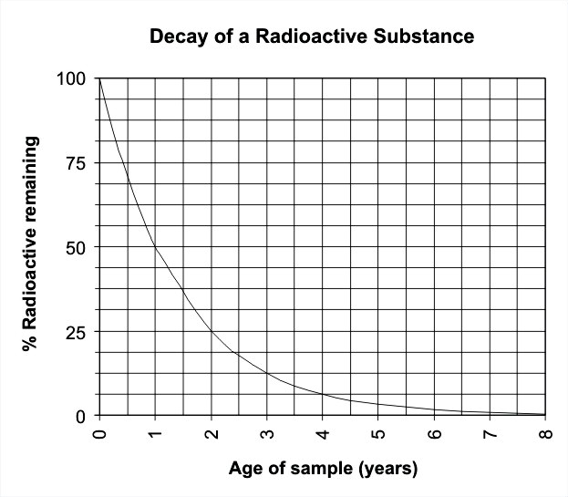The amount of a substance undergoing radioactive decay decreases exponentially, eventually reaching zero. Since there is 50% of the substance left after 1 year, the half-life is 1 year.
{kind=link}
{kind=link}
{kind=link}
{kind=link}
{kind=link}
{kind=link}
{kind=link}
{kind=link}
{kind=link}
{kind=link}
{kind=link}
{kind=link}
{kind=link}
{kind=link}
{kind=link}
{kind=link}
{kind=link}
{kind=link}
{kind=link}
{kind=link}
{kind=link}
{kind=link}
{kind=link}
{kind=link}
{kind=link}
{kind=link}